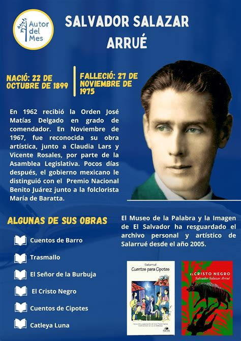

MAPA DE SONSONATE
Información
Sonsonate es un departamento ubicado en la zona occidental de El Salvador, conocido por su producción agrícola, especialmente café, caña de azúcar y frutas tropicales. Su cabecera departamental es Sonsonate, que es un importante centro comercial y de transporte en la región.
Datos Históricos
Sonsonate tiene una rica historia colonial. Fue fundada en 1524 y fue uno de los principales centros de producción agrícola durante la época colonial. Durante el siglo XIX, se consolidó como una ciudad clave en el comercio de añil y otras mercancías agrícolas.

Lista de Municipios
- Sonsonate (cabecera)
- Acajutla
- Izalco
- Juayúa
- Salcoatitán
- San Antonio del Monte
- San Julián
- San Sebastián Salitrillo
- Santa Catarina Masahuat
- Santa Isabel Ishuatán
- Santa Margarita
- Sonzacate
Centros Turísticos
Uno de los principales centros turísticos de Sonsonate es el pueblo de Juayúa, famoso por su festival gastronómico y su impresionante iglesia. El Parque Nacional Los Cóbanos, una de las principales reservas naturales de la zona, es ideal para los amantes de la naturaleza.
Lagos
Sonsonate cuenta con el Lago de Coatepeque, un lugar popular para actividades acuáticas y turísticas. Es conocido por sus aguas cristalinas y sus hermosos paisajes rodeados de montañas volcánicas.

Ríos
El río Lempa es el principal río que atraviesa la región de Sonsonate, y es vital tanto para la agricultura como para la generación de energía hidroeléctrica. También se encuentran otros ríos como el río Guayapa.

Volcanes
El volcán Izalco, uno de los volcanes más activos de la región, es una de las principales atracciones turísticas de Sonsonate. La zona cuenta con varios senderos que ofrecen vistas espectaculares del cráter y los alrededores.

Personajes Célebres
Uno de los personajes más destacados de Sonsonate es el escritor y poeta Salarrué, conocido por su contribución a la literatura salvadoreña. También destaca la figura de Francisco Morazán, quien tuvo vínculos con la región.
